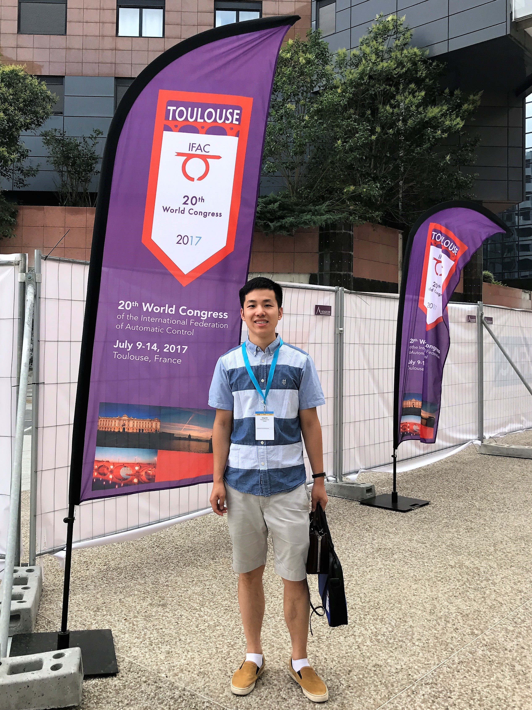
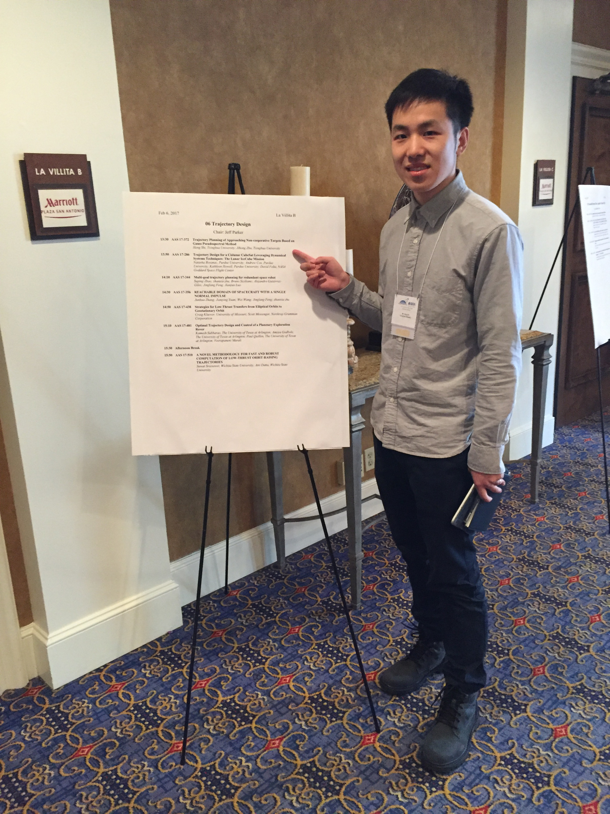
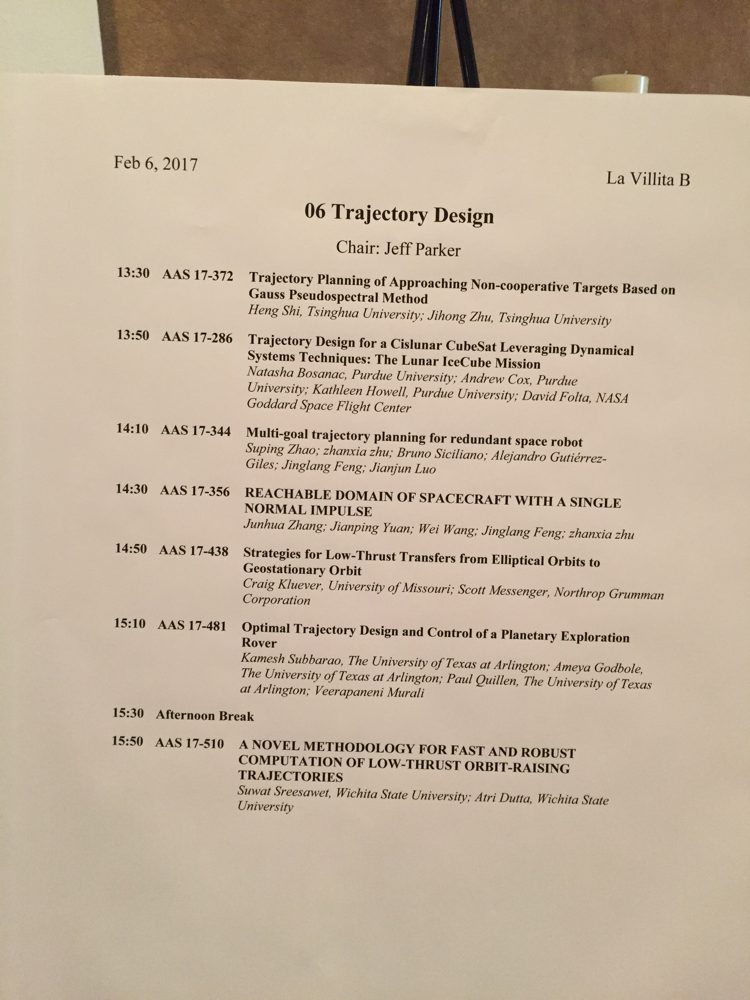
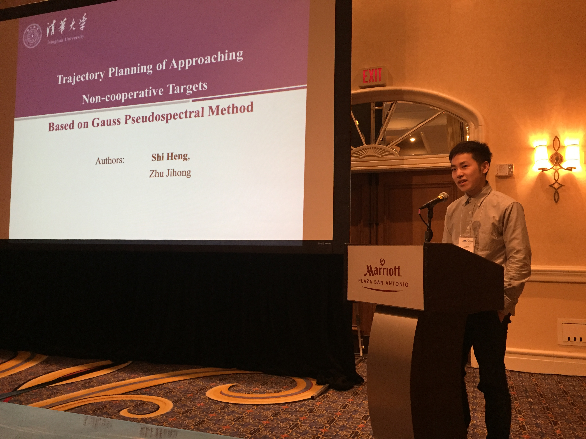
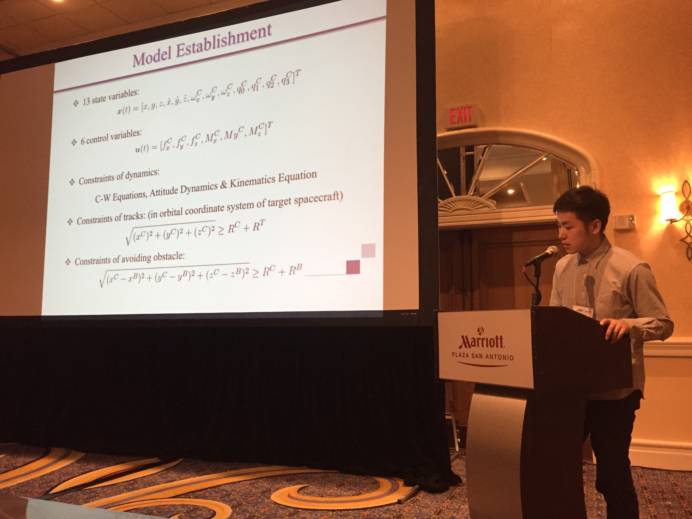

Running – Conferences – Travelling – My Wedding
Running
I have finished 7 marathons:
| Date | Competition | Result |
| Mar 30, 2014 | Zhengzhou-Kaifeng | 5:02:35 |
| Oct 19, 2014 | Beijing | 4:53:39 |
| May 31, 2015 | Qinhuangdao | 5:13:33 |
| Sep 20, 2015 | Beijing | 5:26:01 |
| Nov 8, 2015 | Shanghai | 5:10:01 |
| Sep 17, 2016 | Beijing | 4:02:37 |
| Oct 30, 2016 | Shanghai | 4:41:00 |
2014 Zhengzhou-Kaifeng International Marathon
2014 Beijing International Marathon
2015 Qinhuangdao International Marathon
|

2015 Beijing International Marathon
2015 Shanghai International Marathon
2016 Beijing International Marathon
2016 Shanghai International Marathon
Conference
IFAC 2017, Toulouse, France
July 9-14, 2017
 |
|

|  |
|

27th AAS/AIAA Space Flight Mechanics Meeting, San Antonio, USA
February 5-9, 2017
 |
 |
|  |  |

My Wedding
I got married on Aug 17, 2017. This is my wedding documentary.